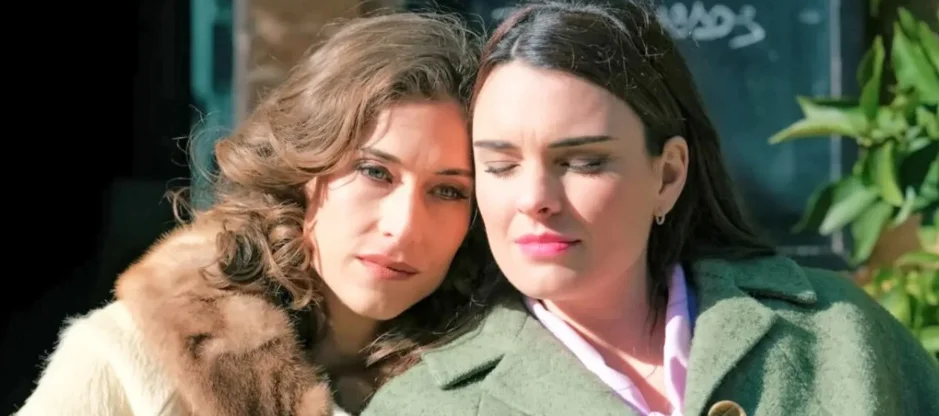
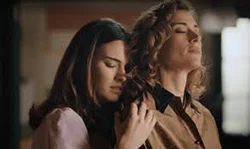

Historia por Temporada


La primera temporada de Sueños de Libertad salió al aire en Antena 3, de Lunes a Viernes a las 15:45 y contó con un total de 269 episodios. El 22 de Septiembre de 2025, la serie se estrenó en HBO Latinoamérica, incluyendo escenas no antes vistas.
Detrás de escena
- Primer día de grabación en "SdL"
- Marta Belmonte presenta a Marta de la Reina
- Alba Brunet presenta a Fina Valero
- Premiere "Sueños de Libertad" (Febrero 21, 2024)
- Tour por el plató de SdL
- Historia de la localizaciones de "SdL"
- Marta y Alba desde el set hablando sobre el futuro de Mafin || Detrás de la entrevista
- Marta y Alba responden preguntas del fandom || Fenómeno Mafin
- Alba sobre el conflicto entre Fina y su padre
- ¿Con qué personajes les gustaría hacer planes?
- "¿Cómo vive Marta la muerte de Jaime?"
- Cuando el saludo de Alba a Marta por su cumpleaños salió antes que le diera el regalo
- Making of salida del concierto en Madrid
- Un día en el rodaje de "SdL"
- Mafin de paseo comiendo helado en Madrid
- Toma falsa del despachamiento
- Sorpresa Navideña Mafin 🎄
- "Hay Mafin para rato"
- Detrás de escena por Nerea Gorriti
- Video saludo por los 200 capítulos
- Marta y Alba en la reunión con fans Mafin por el 1er año de SdL || Detrás de la reunión
- Test Musical
- 'Potra Salvaje' versión elenco
- 'Si antes te hubiera conocido' versión Chicas de la Tienda
La relación de "Mafin" (Marta y Fina) se enfrenta a un nuevo desafío al estar Marta casada con Pelayo Olivares y evaluar cómo balancear los tiempos para verse y mantener las apariencias que necesita Pelayo para convertirse en gobernador. El empresario hotelero empieza mostrándose como un aliado para las protagonistas, pero con el correr de los episodios, dejará ver sus verdaderas intenciones por medio de sus manipulaciones hasta convertirse en su principal peligro.
Marta comenta a Fina sobre unos terrenos en los que Doña Clara, madre de Pelayo, está invirtiendo. En esa conversación, Fina le hace saber que tiene intenciones de comprar una casa propia con el dinero que le dejó su padre, así que deciden ir a ver estos terrenos. Es en este paseo, que Fina descubre su habilidad para la fotografía, usando la cámara que usaba su padre. El talento de Fina, rápidamente se irá desarrollando con el apoyo de Marta y sus amistades, logrando tomar fotos para el calendario de la guardería de la colonia y obteniendo una sala de revelado propia, donde Mafin puede dar rienda suelta a su amor a solas.
Poco después, la oscuridad llegará a la pareja cuando Santiago, el acosador de Fina, se escapa de la cárcel hacia la Mafinca donde después ocurre el incidente con el que se concreta su muerte. Pelayo aprovechará esto para amenazar a Fina con acusar incluso a Marta de lo sucedido, obligándola a huir repentinamente, dejando a Marta devastada y sola ante el peligro, manipulación y la presión de su entorno. La pareja, que había luchado por su amor, ve su vínculo puesto a prueba ante un futuro incierto.
Al encontrarse sin Fina, Marta de la Reina pasa por un período de doloroso duelo entregada a su diario y a veces al alcohol. Pelayo ve este proceso y ni por ello se digna a decirle la verdad, la lleva a Madrid con su suegra para que siga apoyándolo como gobernador. Al volver, Marta prosigue su vida en la mentira, como esposa de Pelayo y viendo cómo la fábrica entra en pérdidas por sabotajes realizados por su primo Gabriel, terminando en manos de Brossard. Al tener la mayoría de acciones, la competencia francesa revoluciona la fábrica con cambios de logos, uniformes y hasta formas de trabajo. Damián, como creador de la empresa, siente su mundo venirse abajo.
Brossard enviará poco después a una auditora llamada Cloe Dubois, quien desde el primer momento queda maravillada por Marta. Ambas, Marta y Cloe empiezan a trabajar juntas y a conocerse más, se admiran mutuamente y empiezan a contarse aspectos de su vida personal. Así, se descubre que Cloe es bisexual. Ella intentará tener un vínculo más íntimo con Marta pero se encuentra con rechazos de su parte. Pelayo por su parte, pierde el puesto de gobernador ante amenazas de revelar su sexualidad, y se va a México con Darío.
Hacia el final de temporada se da una situación trascendente con el diario de Marta: Gabriel lo tiene en sus manos y revelará todo si Damián no le vende sus acciones. El padre de la familia deberá tomar la decisión entre perder totalmente su lugar en la empresa o proteger a su hija.
El final de la segunda temporada encuentra a Mafin separadas, Marta viviendo en la mentira pero empezando algo con Cloe, y con Fina en Argentina con una nueva vida que nos es desconocida.
La segunda temporada de Sueños de Libertad empezó a transmitirse en Antena 3 el 20 de Marzo de 2025, y finalizó el 15 de Enero de 2026.Detrás de escena
- Primer día de grabación en "SdL"
- Experiencia inmersiva en la Gran Vía || Llegada || Regalos || Live
- Fotos extra de la sesión de Fina a Marta en el auto
- Fotos oficiales del revelamiento
- Making of Sorpresa a Fina
- Making of del último día de Fina
- Mensaje de Alba para Marta || Mensaje de Alba para Isabel y Candela
- Marta y Alba comentan sobre el futuro de Mafin
- Marta sobre cómo fue grabar la última escena Mafin y el futuro de MdlR
- Marta sobre la llegada de Cloe
- Marta sobre Cloe: "Poquita gente puede entender a doña Marta como lo hace ella"
La relación de "Mafin" (Marta y Fina) se encuentra en suspenso durante el inicio de esta temporada, ya que Marta de la Reina continúa viviendo una mentira: no conoce que la partida de Fina fue por la amenaza de Pelayo.
Han pasado 4 meses desde que Brossard es el socio mayoritario de la fábrica y que el villano Gabriel de la Reina es director. Marta se encuentra en una relación con Cloe, conversando en los parques, mientras piensa en cómo puede vengar a la familia por las desgracias causadas por su primo.
Unas semanas después, la relación entre Marta y Cloe finaliza definitivamente debido a que Marta reconoce que el recuerdo de Fina es más fuerte y que sigue enamorada de ella. Marta se vuelve a enfocar en lo laboral, con el lanzamiento del perfume "Flor Divina" en honor a Gervasio Merino, Pelayo regresa a Toledo y es asesinado. Así empieza la trama que marcará el regreso de Fina.
La tercera temporada de Sueños de Libertad empezó a transmitirse en Antena 3 el 16 de Enero de 2025, y se encuentra en emisión.